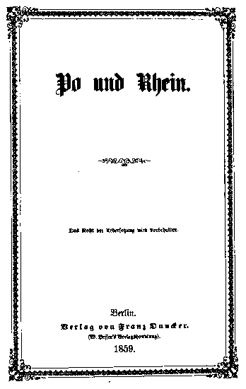

Works of Frederick Engels 1859
Written: by Engels in late February and early March 1859;
Source: MECW Volume 16, p. 215;
First published: as a pamphlet in Berlin, April 1859.
Engels was prompted to write his Po and Rhine by the impending military conflict in Italy and the necessity to determine the stand of the proletarian revolutionaries and the European democrats as opposed to that of the bourgeoisie, above all German, on the ways of unifying Germany and Italy. He also wanted to expose the various chauvinistic theories by which the European ruling circles tried to justify the policy of aggression and conquest, and to show that they were untenable from the point of view of military strategy.
Conceived in February 1859, this work had been written by Engels by March 9 and sent to be read by Marx, who appreciated it highly. “Exceedingly clever,” he wrote to Engels on March 10, 1859, “the political side is also splendidly done and that was damned difficult.” On Marx’s advice Po and Rhine was published in Germany anonymously to avoid a conspiracy of silence. It was printed in April 1859 in Berlin by the publisher Franz Duncker (in 1,000 copies).
See Marx's letters to Lassalle of 25 February, and to Engels on 25 February on the reasoning behind publishing the pamphlet anonymously.
The work exerted a great influence on public opinion in Germany, and was also a success among the military men. No less than ten reviews of it appeared in the German press. All the reviewers approved the military content of the pamphlet and many of them thought it was written by a big military expert. But conflicting opinions were expressed on the author’s political conclusions, particularly the one that a united Germany would not need to hold on to Italian territory for its defence. While liberal newspapers such as the Grenzboten (Leipzig), the Preussische Jahrbücher (Berlin) and Die Reform (Hamburg) agreed — though not quite consistently — with the author’s political arguments, the conservative press — the Augsburg Allgemeine Zeitung, the Aachener Zeitung and the Berliner Revue — adopted a chauvinist standpoint and declared that they would not agree to give up Italian territory.
In May 1859, Marx and Engels decided the time had come to inform the public at large on the origin of the work and wrote in Das Volk, No. 2, that the author of Po and Rhine was a well-known leader of the proletarian party; Engels’ name was not given till later, in issue No. 5 June 4).
In his letter to Lassalle of April 19, 1859, Marx enclosed a list of misprints in the Po and Rhine pamphlet. In this edition they are corrected in accordance with Marx’s instructions.
I. Whether it is true that the Rhine must be defended at the Po.
II. Italy should be left to manage its own affairs.
III. What is sauce for the Goose is sauce for the gander.
IV. Real and natural borders are determined by language and fellow-feeling.